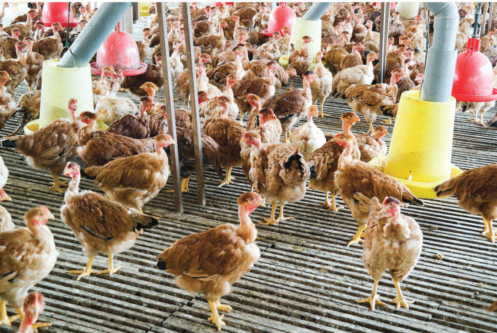

The slatted floor system for poultry is good. It needs less space for each bird. There is no need for bedding or litter. It is easy to clean up droppings because they fall through the slats. This system also helps to keep the house clean. It stops parasites and diseases from spreading because birds don’t touch their droppings. The system also allows a lot of ventilation into the house. However, it is more expensive to start with, than regular solid floors. It is hard to get feeds back if they fall through the slats. The system also doesn’t let you use the building as much. Flies can get in through the slats, making the fly problem worse.
Cage system:
This system is mainly used for commercial egg production. In this system, poultry are confined in compartments surrounded by bars or wire. These compartments are called cages. The cage is large enough to permit limited movement and it allows a bird to stand and sit comfortably. The cages are usually made up of strong galvanized wire and they can be fitted with stands on the floor of a house or hung from the roof. The number of birds per cage varies from 1 to 4 depending on cage size, the size of the bird, and the farmer’s preference.
The cages are arranged into rows or layers called tiers. The tiers can be 3 to 6. The cage should have a sloping floor for easy rolling and collection of eggs. Feeders and